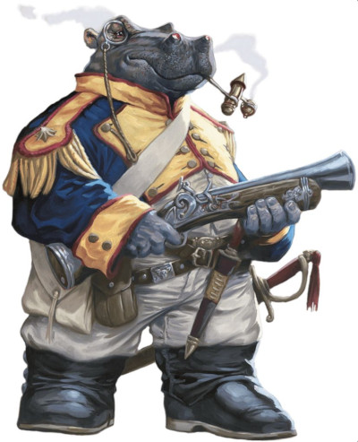
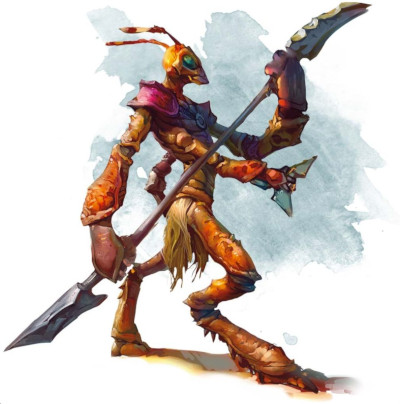

Voyageurs du multivers
Ce document présente six nouvelles options de race pour les personnages joueurs :
Créer votre personnage
Lorsque vous créez votre personnage, vous décidez s'il appartient à la race humaine ou à l'une des races fantastiques du jeu. Si vous créez un personnage en utilisant une option de race présentée ici, suivez ces règles supplémentaires lors de la création du personnage.
Augmentation de caractéristiques
Lorsque vous déterminez vos valeurs de caractéristiques, augmentez une de ces valeurs de 2 et augmentez-en une autre de 1, ou augmentez trois valeurs de 1. Suivez cette règle quelle que soit la méthode que vous utilisez pour déterminer les caractéristiques (lancers de dés ou achat par points). La section Création rapide de la classe de votre personnage propose des suggestions pour les valeurs à augmenter. Vous êtes libre de suivre ces suggestions ou de les ignorer. Quelles que soient les valeurs que vous décidez d'augmenter, aucune ne peut être au-dessus de 20.
Langues
Votre personnage peut parler, lire et écrire le commun et une autre langue que vous et votre MD reconnaissez comme appropriée pour le personnage. Le Manuel des Joueurs propose une liste de langues répandues parmi lesquelles choisir. Le MD est libre d'ajouter ou de supprimer des langues de cette liste pour une campagne particulière.
Type de créature
Chaque créature de D&D, y compris chaque personnage joueur, a une entrée spéciale dans les règles qui identifie son type de créature. La plupart des personnages joueurs sont de type humanoïde. Les options présentées ici indiquent de quel type de créature est votre personnage.
Voici une liste des types de créatures du jeu par ordre alphabétique : aberration, artificiel, bête, céleste, dragon, élémentaire, fée, fiélon, géant, humanoïde, monstruosité, mort-vivant, plante, vase. Ces types n'ont pas de règles spécifiques liées, mais certaines règles du jeu affectent les créatures de certains types de différentes manières. Par exemple, la description du sort soins spécifie que le sort ne fonctionne pas sur une créature de type artificiel.
Longévité
L'espérance de vie typique d'un personnage joueur dans le multivers de D&D est d'environ un siècle, en supposant que le personnage ne rencontre pas avant cela une fin violente lors d'une aventure. Certaines races, comme les nains et les elfes, peuvent vivre des siècles, un fait noté dans la description de la race.
Taille et poids
Les personnages joueurs, quelle que soit leur race, ont généralement plus ou moins la même taille et le même poids que les humains dans notre monde. Si vous souhaitez déterminer la taille ou le poids de votre personnage au hasard, consultez le tableau dans le Manuel des Joueurs et choisissez la ligne qui représente le mieux le gabarit que vous imaginez pour votre personnage.
Elfe astral
Il y a de cela longtemps, des groupes d'elfes de la Féerie se sont aventurés sur le plan astral pour se rapprocher de leurs dieux. La vie dans le Vide d'Argent a imprégné leurs âmes d'une étincelle de lumière divine. Cette lumière se manifeste par une lueur étoilée dans les yeux d'un elfe astral. Parce que rien ne vieillit dans le plan astral, les elfes astraux de ce plan ont des milliers d'années et leur longévité leur donne une perspective inhabituelle sur le temps. Certains sont enclins à la mélancolie, d'autres affichent une absence de sentiment, et beaucoup cherchent des moyens créatifs de s'occuper. Qu'ils choisissent de vivre dans une contemplation tranquille ou qu'ils se lancent dans l'exploration des confins du multivers, ils ont tendance à voir les choses à travers le prisme du temps comme n'ayant que peu ou pas de sens pour eux. Les elfes astraux qui n'habitent pas sur le plan astral peuvent vivre jusqu'à 750 ans.
Traits
Vous avez les traits raciaux suivants.
Type de créature. Vous êtes un humanoïde.
Taille. Votre taille est Moyenne (M).
Vitesse. Votre vitesse de base est de 9 mètres.
Feu astral. Vous connaissez l'un des sorts mineurs suivants de votre choix : lumières dansantes, lumière ou flamme sacrée. L'Intelligence, la Sagesse ou le Charisme est votre caractéristique d'incantation (à choisir lorsque vous sélectionnez cette race).
Vision dans le noir. Vous pouvez voir à 18 mètres dans une lumière faible comme vous verriez avec une lumière vive, et dans le noir comme vous verriez avec une lumière faible. Dans le noir, vous ne discernez pas les couleurs, uniquement des nuances de gris.
Sens aiguisés. Vous maîtrisez la compétence Perception.
Ascendance féerique. Vous avez un avantage aux jets de sauvegarde contre les effets de charme ou pour mettre fin à l'état charmé sur vous-même.
Âme rayonnante. Lorsque vous réussissez un jet de sauvegarde contre la mort, vous pouvez récupérer un nombre de points de vie égal à votre bonus de maîtrise + votre modificateur d'Intelligence, de Sagesse ou de Charisme (à choisir lorsque vous sélectionnez cette race). Vous ne pouvez plus réutiliser ce trait avant d'avoir terminé un repos long.
Transe. Vous n'avez pas besoin de dormir et la magie ne peut pas vous endormir. Vous pouvez terminer un repos long en 4 heures si vous passez ces heures dans une méditation semblable à une transe, pendant laquelle vous restez conscient.
Maîtrises de la transe. Chaque fois que vous terminez un repos long en utilisant votre trait Transe, vous gagnez deux maîtrises, d'une arme ou d'un outil de votre choix (voir Équipement dans le Manuel des Joueurs). Vous acquérez mystiquement ces maîtrises de la mémoire elfique partagée, et vous les conservez jusqu'à la fin de votre prochain repos long.
Autognome
Les autognomes sont des êtres mécaniques construits par des gnomes des roches à leur image, généralement avec un but particulier en tête. Par exemple, un gnome peut construire un autognome pour avoir un collègue inébranlable ou un compagnon fidèle. Parfois, à cause d'un dysfonctionnement ou d'une circonstance unique, un autognome se sépare de son créateur et vit sa vie tout seul. Un autognome ressemble à son créateur, et la plupart des autognomes sont programmés pour parler et comprendre le gnome. Les composants internes utilisés dans la fabrication d'un autognome peuvent varier énormément : l'un pourrait avoir un véritable cœur battant dans sa cavité thoracique, tandis qu'un autre pourrait être alimenté par de la poussière d'étoiles ou des engrenages mécaniques complexes.
Jetez un dé sur la table ci-dessous ou choisissez directement votre histoire pour déterminer quel événement a placé votre autognome sur la voie de l'aventure. Vous pouvez aussi parler avec votre MD pour créer l'histoire de votre autognome. Comme les gnomes, les autognomes peuvent vivre des siècles, jusqu'à 500 ans.
| d8 | Histoire |
|---|---|
| 1 | Votre créateur vous a donné de l'autonomie et vous a poussé à suivre vos rêves. |
| 2 | Votre créateur est mort, vous laissant vous débrouiller tout seul. |
| 3 | Un dysfonctionnement temporaire vous a amené à nuire à votre créateur et vous avez fui plutôt que de subir ses représailles. |
| 4 | Un bug vous a fait perdre votre programmation d'origine. Vous ne vous souvenez pas qui vous a fait ni d'où vous venez. |
| 5 | Vous avez été volé à votre créateur et vous avez hâte de revenir vers lui. |
| 6 | Vous n'aimiez pas la façon dont vous étiez traité par votre créateur, alors vous vous êtes enfui. |
| 7 | Votre créateur vous a construit pour accomplir une mission spéciale. |
| 8 | Vous vous êtes senti pris au piège dans le rôle pour lequel vous avez été construit et avez abandonné votre créateur, déterminé à trouver un but plus important. |
Traits
Vous avez les traits raciaux suivants.
Type de créature. Vous êtes un artificiel.
Taille. Votre taille est Petite (P).
Vitesse. Votre vitesse de base est de 9 mètres.
Blindé. Vous êtes enfermé dans un métal mince ou autre matériau solide. Si vous ne portez pas d'armure, votre Classe d'armure de base est de 13 + votre modificateur de Dextérité.
Construit pour le succès. Vous pouvez ajouter un d4 à un jet d'attaque, de caractéristique ou de sauvegarde que vous effectuez, et pouvez le faire après avoir vu le d20 mais avant que les effets du jet ne soient connus. Vous pouvez utiliser ce trait un nombre de fois égal à votre bonus de maîtrise, et vous récupérez toutes les utilisations dépensées lorsque vous terminez un repos long.
Nature mécanique. Vous avez la résistance aux dégâts de poison, une immunité aux maladies, et vous avez un avantage aux jets de sauvegarde pour ne pas être paralysé ou empoisonné. Vous n'avez pas besoin de manger, de boire ni de respirer.
Repos de la sentinelle. Lorsque vous prenez un repos long, vous passez au moins 6 heures dans un état inactif et immobile, au lieu de dormir. Dans cet état, vous semblez inerte, mais vous n'êtes pas inconscient.
Conception spécialisée. Vous gagnez la maîtrise de deux outils de votre choix.
Vraie vie. Si on lance le sort réparation sur vous, vous pouvez dépenser un dé de vie, le lancer et regagner un nombre de points de vie égal au résultat plus votre modificateur de Constitution (minimum 1 point de vie). De plus, votre créateur vous a conçu pour pouvoir bénéficier de sorts courants qui préservent la vie mais qui n'affectent normalement pas les artificiels : soin des blessures, mot de guérison et stabilisation.
Giff
Les giffs sont un peuple grand et large d'épaules avec des traits semblables à ceux d'un hippopotame. Certains ont la peau lisse, tandis que d'autres ont des poils courts sur le visage et le sommet de la tête. De part leur taille impressionnante et leur apparence inoubliable, les giffs sont remarqués partout où ils vont. Raconter des histoires est une riche tradition parmi les giffs, et il n'est pas rare de voir un giff raconter ses exploits passés devant une foule ravie. Avoir un giff amical à proximité lorsqu'une bagarre de taverne éclate peut également être utile, car un giff peut généralement tenir le coup lorsque des réjouissances agréables se transforment en coups de poing. Les giffs se divisent en deux camps en ce qui concerne la façon dont leur nom doit être prononcé. La moitié d'entre eux le disent avec un g dur, l'autre moitié avec un g doux. Les désaccords sur la prononciation correcte se transforment souvent en rancunes, en disputes bruyantes et en concours de coups de tête, mais ils dégénèrent rarement au-delà.
Traits
Vous avez les traits raciaux suivants.
Type de créature. Vous êtes un humanoïde.
Taille. Votre taille est Moyenne (M).
Vitesse. Votre vitesse de base est de 9 mètres et vous avez une vitesse de nage égale à votre vitesse de base.
Gros dommages. Comme un hippopotame dans un magasin de porcelaine, vous êtes naturellement doué pour endommager les choses. Lorsque vous obtenez un 1 sur un dé de dégâts lors d'une attaque au corps à corps, vous pouvez relancer le dé et utiliser le nouveau jet. Vous ne pouvez faire cela qu'une fois par tour.
Gabarit d'hippopotame. Vous bénéficiez d'un avantage aux jets de caractéristiques basés sur la Force et aux jets de sauvegarde de Force. De plus, vous comptez comme une taille plus grande pour déterminer votre capacité de charge et le poids que vous pouvez pousser, traîner ou soulever.
Hadozi
Les hadozis sont un peuple aux traits simiens qui s'est depuis longtemps adapté pour vivre parmi les grands arbres de leur monde natal. Ce sont des grimpeurs naturels, avec des pieds aussi adroits que leurs mains, au point même d'avoir des pouces opposables. Des membranes de peau pendent librement de leurs bras et de leurs jambes. Lorsqu'elles sont tendues, ces membranes permettent à un hadozi de planer temporairement. Les premiers hadozis étaient chassés par de grands prédateurs naturels. Pour survivre dans cet environnement hostile, ils ont développé un sens instinctif de la communauté. Aujourd'hui, ce même instinct oblige de nombreux hadozis à cultiver des amitiés, sachant que le nombre signifie la sécurité.
Traits
Vous avez les traits raciaux suivants.
Type de créature. Vous êtes un humanoïde.
Taille. Votre taille est Moyenne (M) ou Petite (P). Vous choisissez la taille lorsque vous sélectionnez cette race.
Vitesse. Votre vitesse de base est de 9 mètres et vous avez une vitesse d'escalade égale à votre vitesse de base.
Pieds adroits. Vous pouvez effectuer l'action Utiliser un objet en tant qu'action bonus.
Planer. Si vous n'êtes pas incapable d'agir et ne portez pas d'armure lourde, vous pouvez étendre les membranes de votre peau et planer. Ce faisant, vous pouvez effectuer les manœuvres aériennes suivantes :
- Lorsque vous tombez, vous pouvez vous déplacer de 1,50 mètre horizontalement pour chaque 30 cm de chute.
- Si vous devez subir des dégâts suite à une chute, vous pouvez utiliser votre réaction pour réduire les dégâts de la chute à 0.
Plasmoïde
Les plasmoïdes sont des êtres amorphes sans forme typique. En présence d'autres personnes, ils adoptent souvent une forme similaire, mais il y a peu de chance de confondre un plasmoïde avec autre chose. Ils consomment de la nourriture par osmose, comme une amibe, et excrètent les déchets par de minuscules pores. Ils respirent en absorbant l'oxygène à travers un autre ensemble de pores, et leurs membres sont suffisamment forts et flexibles pour saisir et manipuler des armes et des outils. Bien que la plupart des plasmoïdes soient gris translucide, ils peuvent altérer leur couleur et leur translucidité en absorbant les colorants à travers leurs pores.
Les plasmoïdes n'ont pas d'organes internes normaux. Leur corps est composé de cellules, de fibres, de suintement semblable à du plasma et d'amas de nerfs appelés ganglions. Ces nerfs permettent à un plasmoïde de détecter la lumière, la chaleur, la texture, le son, la douleur et les vibrations. Les plasmoïdes peuvent raidir les couches externes de leur corps pour conserver une forme humaine, ce qui leur permet de porter des vêtements et des accessoires. Ils parlent en forçant l'air à sortir de cavités tubulaires qui se resserrent pour produire du son. Lorsque les plasmoïdes dorment, ils perdent leur rigidité, s'étalent, et sont parfois confondus avec une roche ou une autre caractéristique de l'environnement.
Traits
Vous avez les traits raciaux suivants.
Type de créature. Vous êtes une vase.
Taille. Votre taille est Moyenne (M) ou Petite (P). Vous choisissez la taille lorsque vous sélectionnez cette race.
Vitesse. Votre vitesse de base est de 9 mètres.
Amorphe. Vous pouvez vous déplacer au travers d'espaces larges de 2,50 cm, à condition que vous ne portiez rien. Vous avez également un avantage aux jets de caractéristique que vous effectuez pour commencer ou vous échapper d'une lutte.
Vision dans le noir. Vous pouvez voir à 18 mètres dans une lumière faible comme vous verriez avec une lumière vive, et dans le noir comme vous verriez avec une lumière faible. Dans le noir, vous ne discernez pas les couleurs, uniquement des nuances de gris.
Retenir son souffle. Vous pouvez retenir votre souffle pendant 1 heure.
Résistance naturelle. Vous avez la résistance aux dégâts d'acide et de poison, et un avantage aux jets de sauvegarde pour ne pas être empoisonné.
Modifier sa forme. Si vous n'êtes pas incapable d'agir, vous pouvez remodeler votre corps pour vous donner une tête, un ou deux bras, une ou deux jambes et des mains et des pieds de fortune, ou vous pouvez revenir à une forme flasque sans membres (aucune action requise). Par une action bonus, vous pouvez extruder un pseudopode mesurant jusqu'à 15 cm de large et 3 mètres de long ou le réabsorber dans votre corps. Vous pouvez utiliser ce pseudopode pour manipuler un objet, ouvrir une porte ou un conteneur non-verrouillé, ranger ou récupérer un objet dans un conteneur ouvert ou verser le contenu d'un conteneur. Le pseudopode ne peut pas attaquer, activer des objets magiques ou transporter plus de 5 kilos.
Thri-kreen
Les thri-kreen ont des traits insectoïdes et deux paires de bras. Leurs corps sont enfermés dans de une chitine protectrice. Ils peuvent modifier la coloration de cette carapace pour se fondre dans leur environnement naturel. Bien que les thri-kreen ne dorment pas, ils ont besoin de périodes d'inactivité pour se revitaliser. Pendant ces périodes, ils sont pleinement conscients et conscients de ce qui se passe autour d'eux. Les thri-kreen parlent en faisant claquer leurs mandibules et en agitant leurs antennes, indiquant aux autres thri-kreen ce qu'ils pensent et ressentent. Les autres créatures trouvent cette méthode de communication difficile à interpréter et impossible à reproduire. Pour interagir avec les autres, les thri-kreen s'appuient sur une forme de télépathie.
Traits
Vous avez les traits raciaux suivants.
Type de créature. Vous êtes une monstruosité.
Taille. Votre taille est Moyenne (M) ou Petite (P). Vous choisissez la taille lorsque vous sélectionnez cette race.
Vitesse. Votre vitesse de base est de 9 mètres.
Carapace de caméléon. Tant que vous ne portez pas d'armure, votre carapace vous donne une Classe d'armure de base de 13 + votre modificateur de Dextérité. Par une action, vous pouvez changer la couleur de votre carapace pour qu'elle corresponde à la couleur et à la texture de votre environnement, ce qui vous donne un avantage aux jets de Dextérité (Discrétion) effectués pour vous cacher dans cet environnement.
Vision dans le noir. Vous pouvez voir à 18 mètres dans une lumière faible comme vous verriez avec une lumière vive, et dans le noir comme vous verriez avec une lumière faible. Dans le noir, vous ne discernez pas les couleurs, uniquement des nuances de gris.
Bras secondaires. Vous avez deux bras secondaires légèrement plus petits au-dessous de votre paire de bras principale. Les bras secondaires fonctionnent comme vos bras principaux, avec les exceptions suivantes :
- Vous pouvez utiliser un bras secondaire pour manier une arme qui a la propriété légère, mais vous ne pouvez pas utiliser un bras secondaire pour manier d'autres types d'armes.
- Vous ne pouvez pas utiliser un bouclier avec un bras secondaire.
Revitalisation sans sommeil. Vous n'avez pas besoin de dormir et pouvez choisir de rester conscient pendant un repos long, même si vous devez toujours vous abstenir de toute activité intense pour profiter du repos.
Télépathie thri-kreen. Vous avez la capacité magique de communiquer mentalement avec n'importe quel nombre de créatures consentantes que vous pouvez voir à 36 mètres ou moins de vous. Une créature contactée n'a pas besoin de partager une langue avec vous, mais elle doit être capable de comprendre au moins une langue. Votre lien télépathique avec une créature est rompu si vous et la créature vous déplacez à plus de 36 mètres l'un de l'autre, si l'un de vous est incapable d'agir, ou si l'un de vous rompt mentalement le contact (aucune action requise).
Traduit par blueace